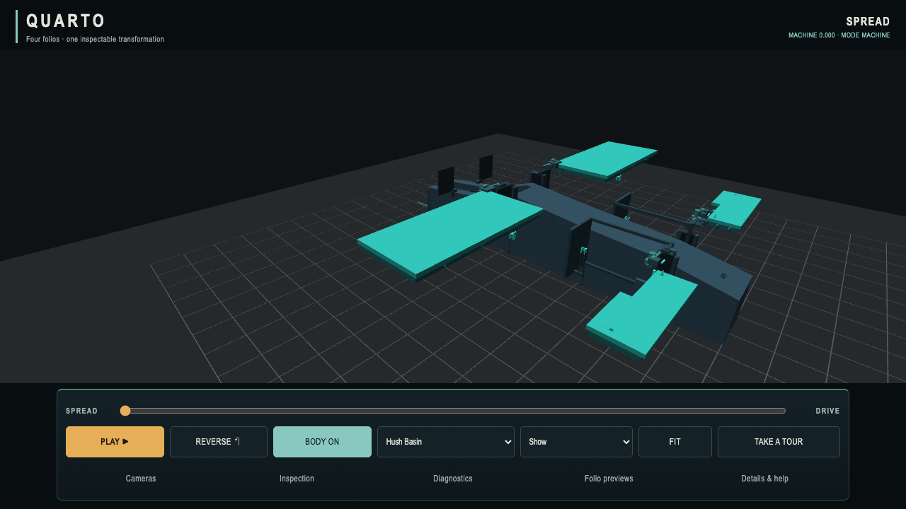
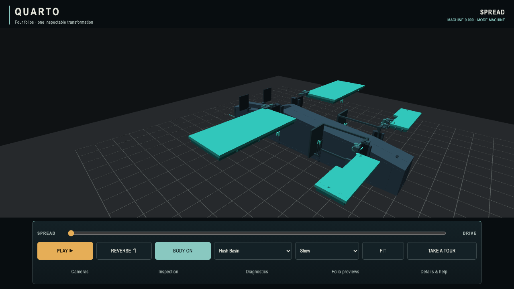
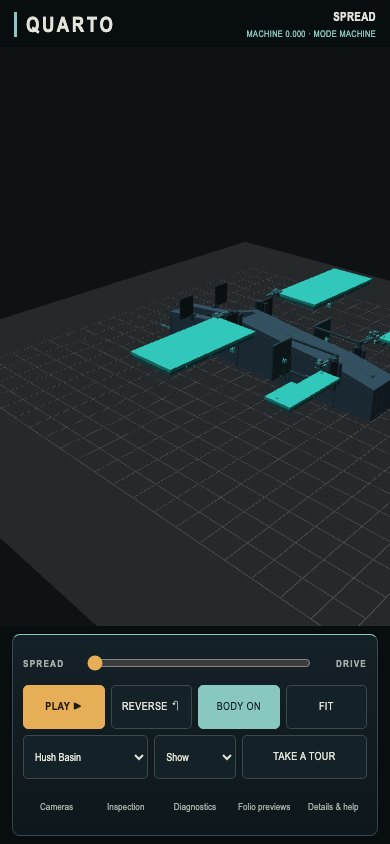

Quarto / review candidate / 6 October 2026
Gentler panning. Same camera, same scene.
The owner found translation too sensitive on a phone. This candidate reduces panning travel by about 20% while preserving orbit, zoom, inertia, fixed cameras, framing and transformation timing. Inspect, Show and Game remain playback speeds, with identical camera input settings.
2.98 → 2.38Desktop scene units moved by the same 24 px pan
≈20% lessMouse and two-touch translation
UnchangedOrbit angles and wheel/pinch zoom response
Desktop / identical 24 px horizontal right-drag
Accepted baseline · pan divisor 80

Candidate · pan divisor 100

Phone-sized / identical two-touch pan
Baseline

Candidate

Baseline: 11bfa39f45327197d516939046d48b1c7caefac0. Matched captures use SwiftShader and flat fallback lighting on both sides; the supported Mac browser was also checked. Touch is emulated, not a physical-device feel or performance result. Authority participation: none. See the evidence report for tests, raw measurements, preserved failed harness attempts and limits.